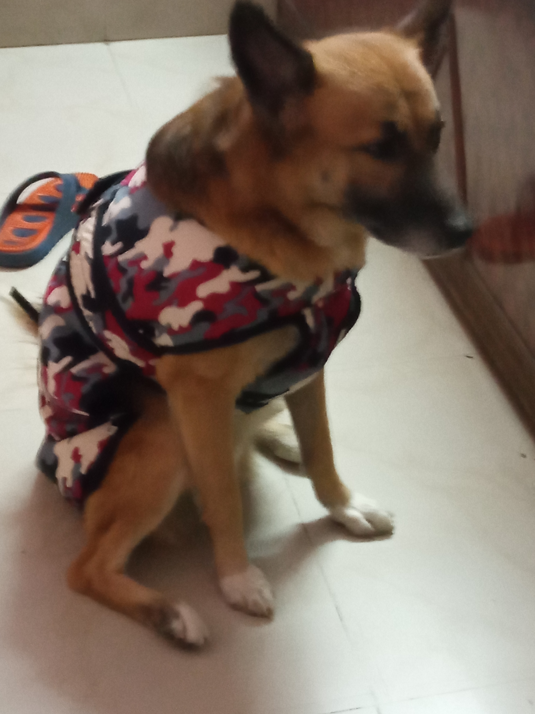

My Name Is Mac
`Hello Everyone
My favorite pet is a dog. I love dogs because they are
friendly and cute.
They are also loyal to their owners. But most
of all, they can be a great friend when I am lonely. Dogs are
wonderful pets.
I love dogs because they are friendly and cute. When I
look at their big, beautiful eyes, I just melt like ice cream on a
hot summer day. When they do something bad, it is hard to get
upset. As we walk down the sidewalk, dogs greet everyone they
see. Dogs are the cutest and friendliest animals on Earth.
Dogs are not only adorable; they are also loyal to their
owners. When you are away, dogs are always on their best
behavior and when you return, he or she will be excited to see
you.
You can trust dogs to not do their business in the house or
on other people’s property if they are well trained. You can
depend on your dog to keep you safe. Dogs have always been
loyal to me.
Dogs are great friends when you are lonely. They can
sense when you’re down and even do tricks to cheer you up.
My dog usually licks me on my nose when I am crying. A treat is
always a good way to say thank you to your dog. When you are
lonely, you can always count on your pet.
As you can see, dogs are wonderful pets to have. Their
cuteness makes having them much more enjoyable. Their
loyalty makes them trustworthy. You will never be alone when
you have a dog as a pet. Dogs are the best pets ever!.
Visit Wesite were lines are taken

My pics.
- 5 POINTS THAT HOW DOGS HELP US
- You’ll exercise more.
Owning a dog can motivate you to exercise every day. On those days when it might be easy to skip a workout, looking at your dog standing by the door waiting to go for a walk can give you the push you need to get out there. Taking your dog for a 30 minute walk every day can greatly improve your health.
- You’ll feel less stressed.
There have been lots of studies that have shown how dogs decrease stress levels. Petting your dog, playing with your dog, and simply watching your dog can reduce your stress each day. Research shows that dog ownership reduces stress hormones and the effects usually outweigh the stress caused by caring for a dog.
- Your social life may improve.
Not only does walking your dog help you to get exercise, it might also help you get a date. People are more likely to stop and talk with you when you’re walking a dog. Going to the dog park or taking your dogs to run errands can also lead to strangers striking up conversations with you about your dog.
- You may detect cancer sooner.
A dog’s amazing sense of smell can be used for a variety of purposes, including cancer detection. Many dog owners have reported their dog sniffing, licking, or nudging spots that later turned out to be cancerous. One of the unexpected benefits of having a dog is that it may even save your life by helping you to detect cancer.
- Your kids will be less likely to have allergies.
Children who are raised around a dog are less likely to have allergies. In fact, living in a home with a dog can help kids grow up to have an increased immunity to pet allergies later in life.